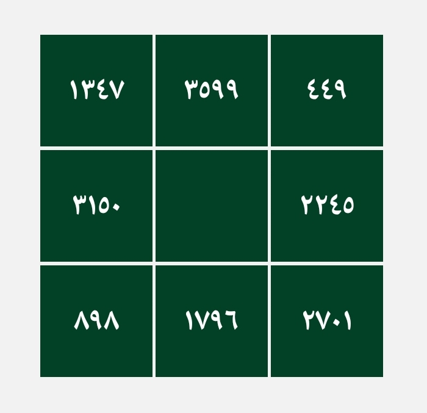
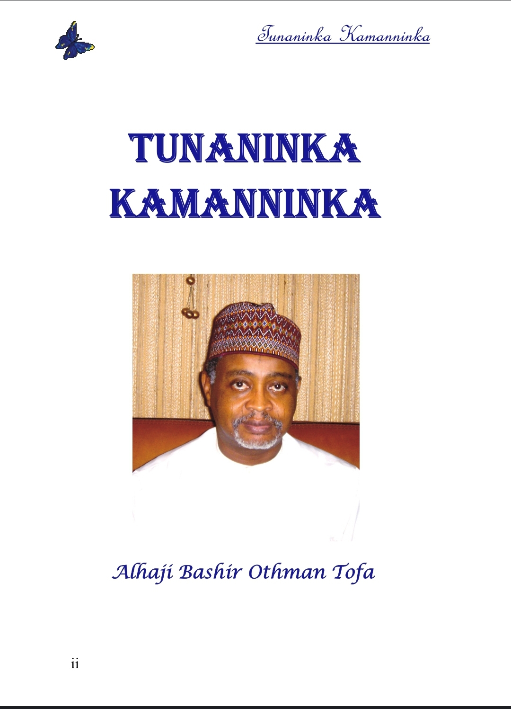
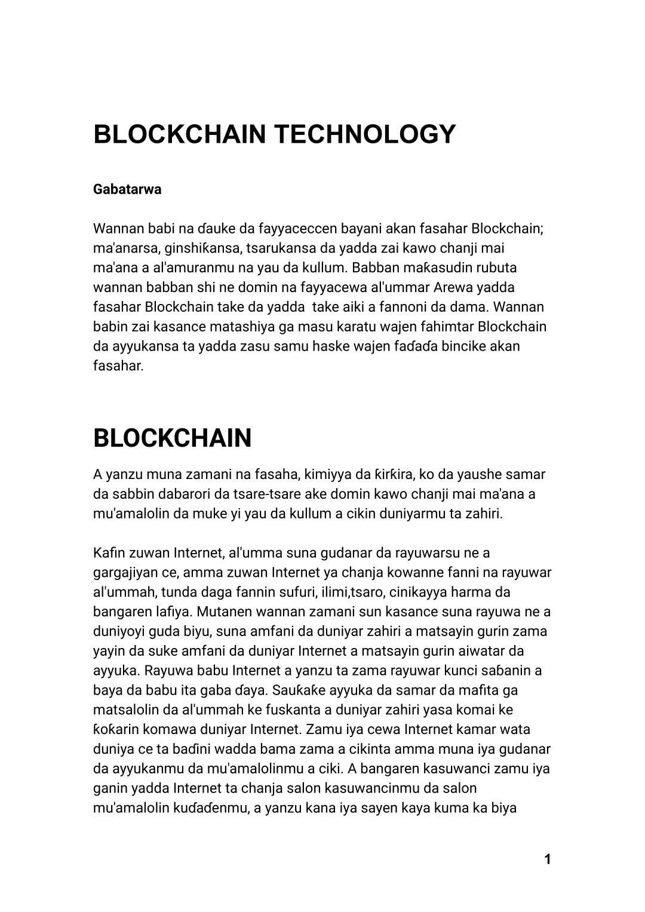

Wannan Sirrin Mujarrabun ne ga maza da mata masu neman Mallaka ga ko wanene walau miji da mata ko mai gida da yaron gida ko dan uwa da yar uwa ko saurayi da budurwa kowa zai iya jarraba wannan sirrin
Yadda Ake Aikata Sirrin
Ana rubuta wannan akan Allon karfe ko akan takarda ko akan yashi sannan a saka sunan wanda ake so a tsakiyar hatimin, idan a takarda aka rubuta sai a daura akan carbi, bayan an shirya sai a shafa turare mai kamshi, a zauna ayi wurudin tabbat yada kafa 449 sannan sai ayi wuridin Ya wadudu kafa 5395, bayan an gama sai kayi wannan azimar "Allahumma Aj'al Muhabbatiy fi qalbi (Sai ka fadi sunan ta ko sunan shi) bihaqqi Ahamun Saqakun Hala'un Yassun wa bi hakki bismillahi rahmani rahim" kafa 7, kullum haka zakayi na tsawon kwana bakwai, aikin ana farawa ne ranar alhamis.
Sharadin Aikin
Kada mace tayi idan tana jinin Al'ada, sannan idan aka soma aikin ba a dainawa har sai an gama, bayan an gama aikin dole sai anyi sadaka kamar nono, ko gyada ko sukari ayi sadaka
Izinin aikin
izinin wannan aikin shine mutum ya danna wannan links din Click Here


